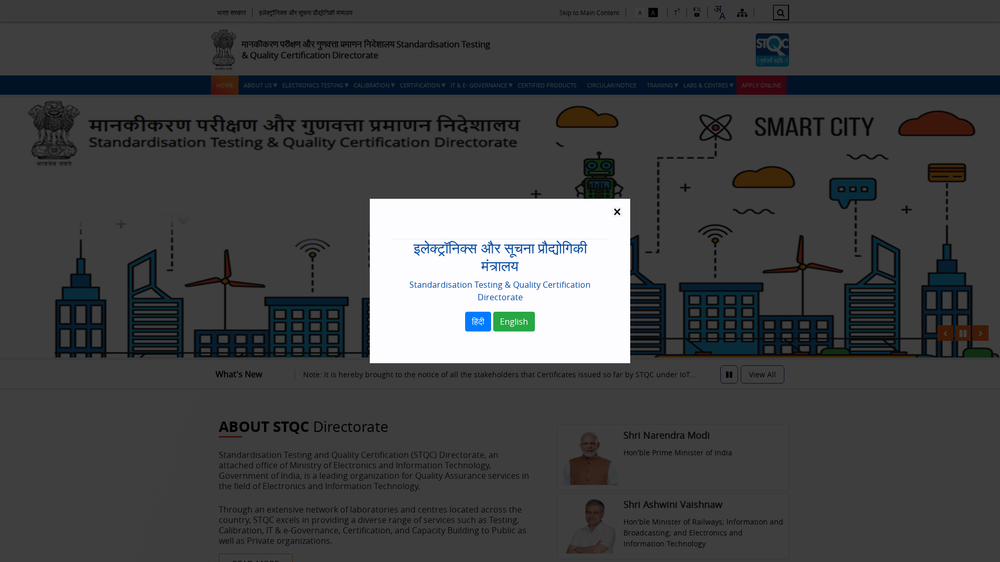
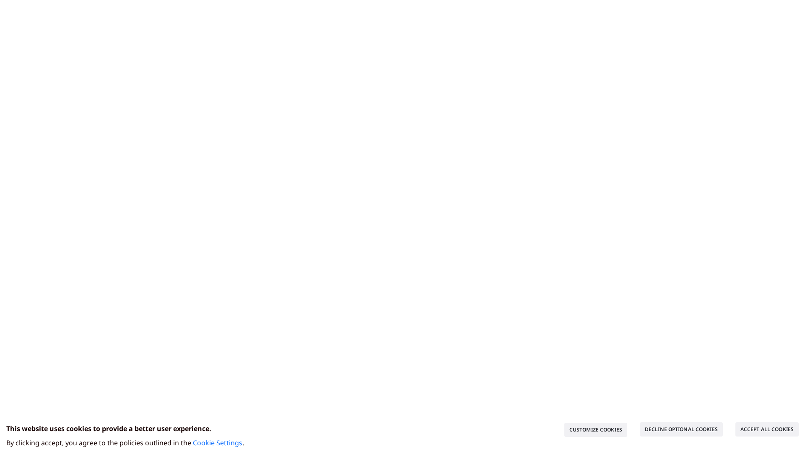

F
Overall Grade
17.6%
Compliance
17
Total Checks
3
Passed
14
Failed
NON_COMPLIANT
Status
Requirement-Wise Results
F1-01
Primary Colour Palette
FAIL
0 pass · 1 fail
F1-02
Functional Colour Palette
PASS
1 pass · 0 fail
F1-03
Icon Colours
FAIL
0 pass · 1 fail
F1-04
Footer Background Colour
FAIL
0 pass · 1 fail
F1-05
Consistent Icon Style
PASS
1 pass · 0 fail
F1-06
DBIM Icon Set Usage
FAIL
0 pass · 1 fail
F1-07
Icon File Format
FAIL
0 pass · 2 fail
F1-08
Icon Size
FAIL
0 pass · 7 fail
F1-09
Icon Aspect Ratio
FAIL
0 pass · 1 fail
F1-10
Icon Contrast on Images
PASS
1 pass · 0 fail
Detailed Violation Table
| Req. | Name | Status | Reason | Actual | Expected | Evidence |
|---|---|---|---|---|---|---|
| F1-01 | Primary Colour Palette | FAIL | No dominant primary colour group detected on the website. | UNKNOWN | Burgundy, Purple, Blue, Green, Chrome Yellow, Cinnamon Red | |
| F1-02 | Functional Colour Palette | PASS | No functional colour violations detected. | N/A | DBIM functional palette |  |
| F1-03 | Icon Colours | FAIL | Icon uses colour #044A9F which is not the dominant key colour or #FFFFFF. Nearest approved: None (ΔE=999.0) | #044A9F | Dominant group colour or #FFFFFF | |
| F1-04 | Footer Background Colour | FAIL | Footer background #000000 does not match dominant key colour None (ΔE=0.0). | #000000 | Dominant key colour | |
| F1-05 | Consistent Icon Style | PASS | Icon styles appear consistent: {'unknown': 2}. | {'unknown': 2} | Single consistent icon style | |
| F1-06 | DBIM Icon Set Usage | FAIL | DBIM icon match: 22.2% (2/9). Custom/non-DBIM icons: ['topfb_icon ', 'bhashini-dropdown-btn-icon ', 'topfb_icon /sitemap', 'icon_s ', 'icon_s '] | 22.2% | >=70% DBIM icon set | |
| F1-07 | Icon File Format | FAIL | Icon uses disallowed format '.jpg': https://www.stqc.gov.in/themes/stqc/images/leader1.jpg | .jpg | PNG, SVG, or WEBP |  |
| F1-07 | Icon File Format | FAIL | Icon uses disallowed format '.jpg': https://www.stqc.gov.in/sites/default/files/2024-08/railway_2.jpg | .jpg | PNG, SVG, or WEBP | |
| F1-08 | Icon Size | FAIL | Icon rendered at 15x22px which is not a DBIM approved size. | 15x22 | 24x24, 32x32, 48x48, or 64x64 | |
| F1-08 | Icon Size | FAIL | Icon rendered at 20x19px which is not a DBIM approved size. | 20x19 | 24x24, 32x32, 48x48, or 64x64 | |
| F1-08 | Icon Size | FAIL | Icon rendered at 15x16px which is not a DBIM approved size. | 15x16 | 24x24, 32x32, 48x48, or 64x64 | |
| F1-08 | Icon Size | FAIL | Icon rendered at 49x78px which is not a DBIM approved size. | 49x78 | 24x24, 32x32, 48x48, or 64x64 | |
| F1-08 | Icon Size | FAIL | Icon rendered at 12x14px which is not a DBIM approved size. | 12x14 | 24x24, 32x32, 48x48, or 64x64 | |
| F1-08 | Icon Size | FAIL | Icon rendered at 20x22px which is not a DBIM approved size. | 20x22 | 24x24, 32x32, 48x48, or 64x64 | |
| F1-08 | Icon Size | FAIL | Icon rendered at 21x23px which is not a DBIM approved size. | 21x23 | 24x24, 32x32, 48x48, or 64x64 | |
| F1-09 | Icon Aspect Ratio | FAIL | Icon appears non-square: rendered 49x78 (ratio 0.627) | Ratio 0.627 | 1:1 (square) |  |
| F1-10 | Icon Contrast on Images | PASS | No icons detected over image/banner backgrounds. | N/A | Contrast ratio >= 4.5:1 |  |